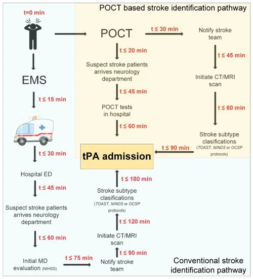

If a patient is showing signs of a stroke and calls an ambulance, the average time the ambulance takes to come to their home is between 8 to 15 minutes. From there the patient will reach the hospital in an additional 30 minutes, and an extra 45 minutes is used to reach the proper department to begin evaluating the patient. Finally, around 135 more minutes is needed before the stroke team is called and initiates a CT/MRI scan to diagnose the type of stroke the patient is suffering from, making the total time before any treatment is given to be around 225 minutes.
Using Fluorolyze, patients will be evaluated and tested for stroke inside the ambulance, due to the portability of our device, and the stroke team can be contacted while the patient is still being transported cutting 180 minutes from the entire process. Patients can then receive treatment much quicker reducing the risk of any permanent damage and death.

Fluorolyze is an accessible device that can be used to save many lives. The dimensions of the Fluorolyze make it incredibly portable and easy to integrate into the vast network of hospitals, ambulances, and treatment centers across the world. The low power draw of 125 watts makes our device cost-effective while providing vastly improved accuracy in the field of stroke detection. Furthermore, hospitals can bring the device to patients’ homes since its dimensions fall within conventional home power consumption limits, opening up a whole new way to reach patients who may not be able to access their local hospital for aid.